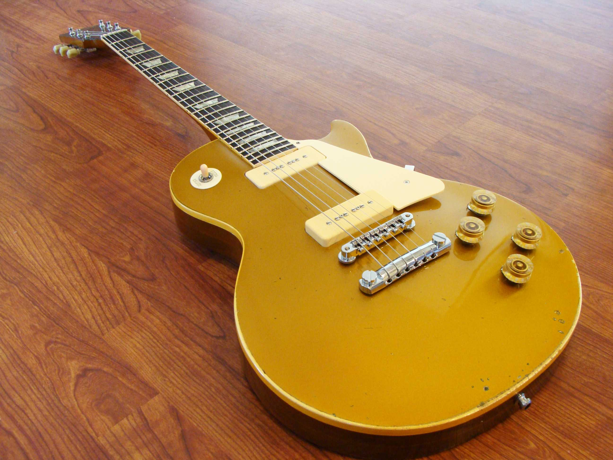

Musiciens de studio depuis une vingtaine d’années pour de grands noms de la chanson et de la scène rock française - Hubert-Félix Thiéfaine, Alain Chamfort, Zazie, Izia - Mickaël Lelarge et François Darouen sont revenus dans leur ville natale du Havre pour ouvrir Guitars Store Vintage, un magasin de vente et d’achat de guitares électriques de collection. Ces deux professionnels offrent aujourd’hui leur expertise éclairée tant dans la sélection d’instruments de qualité certifiés mais aussi dans la réparation ou l’entretien à travers leur atelier de lutherie. Fender, Gibson, Rickenbacker ou encore Gretsch, toutes ces six cordes de renom - des années cinquante aux années soixante-dix - n’ont plus de secret pour eux. Ils proposent également une sélection d’amplis vintage, des marques prestigieuses sur lesquelles les plus grands guitaristes ont fait leurs preuves : Vox, Fender, Marshall… Tous les mois, avec leurs amis musiciens et partenaires, Mickaël et François organisent des soirées musicales dans la salle sonorisée attenante au magasin.

Musicien de scène comme de studio, Mickaël, 43 ans, a tourné pendant dix ans avec Hubert Félix Thiéfaine. Ce passionné de guitares les collectionne depuis son adolescence. A son actif, une Gibson GoldTop de 1959 achetée à Nashville 1 000$ et à la valeur estimée à 50 000$ aujourd’hui. Sa guitare fétiche dont il ne se séparerait pour rien au monde !
Luthier de formation, François, 56 ans, est aussi un «requin» de studio. Il a joué pour de nombreux artistes français dont Zazie, Maxime Leforestier, Alain Chamfort. Les vieux bois et les patines à l’ancienne n’ont plus de secret pour lui, tout comme l’électronique qui lui permet de redonner vie aux vieux amplis réputés pour la chaleur de leur son.